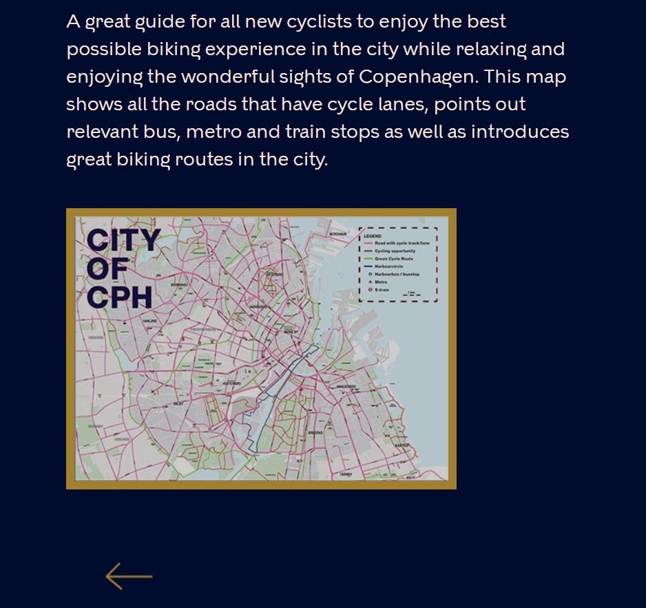

The website cam out being really nice in my opinion. We used Kobenhavn style guide, all the fonts, colors and most of the texts are from style guide. But we tried to make it visually appealing.
On the print screen you can see that we changed the background color and the back button.
There is also animation in the beggining of the website, right when you enter it.
